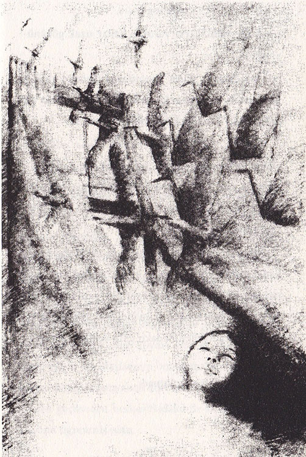

Sadako, giderek zayıflayıp halsiz düşünce, ölümü daha çok düşünmeye başladı. Cennet Dağı’nda yaşayacak mıydı acaba? Ölürken insanın canı acıyor muydu? Yoksa ölüm, uykuya dalmak gibi bir şey miydi?
Ölüm korkusunu kafamdan bir atabilsem, diye düşündü. Fakat bu, yağan yağmura engel olmak gibi bir şeydi. Başka şeyler düşünmeye çalışırken, hep ölüm geliyordu aklına.
Ekim ayının ortalarına doğru Sadako, geceyle gündüzü birbirine karıştırmaya başladı. Bir keresinde uyandığında annesini ağlarken gördü.
“Ne olur ağlama,” diye yalvardı annesine. Birkaç kelime daha söylemek istedi ama ağzını ve dilini hareket ettiremiyordu. Bir damla gözyaşı, yanağından aşağı süzüldü. Annesini ne kadar çok üzdüğünü görüyordu. Yapabildiği tek şey kâğıttan turnalar yapmak ve bir mucize ummaktı.
Sadako, artık kâğıdı tutamıyordu, elleri hantallaşmıştı.
“Kendi kendime bir kuş bile yapamıyorum, tam bir kaplumbağaya benzedim,” diye söylendi. Sonra bütün gücüyle kâğıdı hızlıca katlamaya çalıştı.
Dakikalar, belki de saatler sonra Doktor Numata odaya geldi ve elini Sadako’nun alnına koydu. Sadako doktorun, “Şimdi dinlenmen gerek. Yarın daha çok kuş yapabilirsin,” dediğini güçlükle duyabildi.
Ve yarı baygın bir şekilde başını öne eğerek, “Yarın...” diyebildi. Oysa yarın, o kadar uzak görünüyordu ki...

Uyandığında ailesi yanındaydı. Sadako onlara gülümsedi, her zamanki sıcak, sevecen ortamın bir parçasıydı. Bunu hiçbir şey değiştiremezdi.
Günışığı, gözlerinin gerisinde dans ediyordu şimdi. Sadako, altın renkli turnasına dokunmak için titreyen narin elini uzattı. Yaşamı sona eriyordu ama turnası, Sadako’nun kendisini güçlü hissetmesine yardımcı oldu yine.
Tavanda asılı duran turna kuşu sürüsüne baktı. Sadako onları seyrederken, kuşlar, sonbaharın hafif rüzgârıyla hışırdayarak sallandılar. Sanki canlıydılar da açık pencereden uçup gideceklerdi. Ne kadar güzel ve özgürdüler! Sadako içini çekti ve gözlerini kapattı.
Bir daha da hiç uyanmadı.